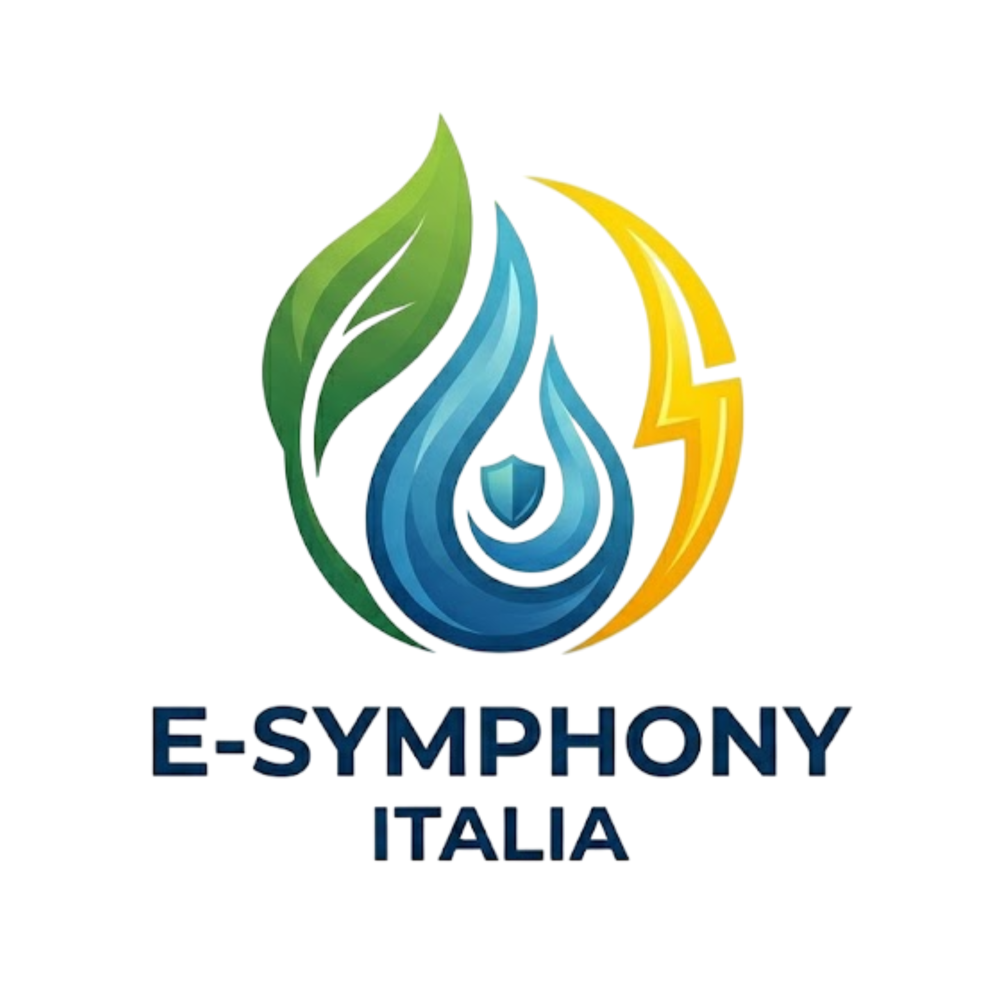

VireoLogic AI
Perchè il prodotto è innovativo:
- gestione predittiva idrico energetica: l'AI non reagisce solo ai comandi, ma anticipa il fabbisogno.
- sensori invisibili e non invasivi: utilizza il monitoraggio del carico elettrico e idrico.
- sustainability score & tokenizzazione: il sistema genera un report di sostenibilità reale.
Altre caratteristiche che rendono VireoLogic AI unico:
- Hardware modulare.
- Scocca in bioplastica.
- Algoritmi Low Energy.